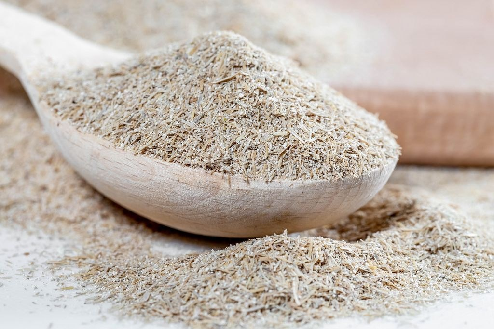
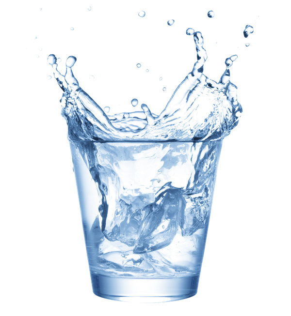
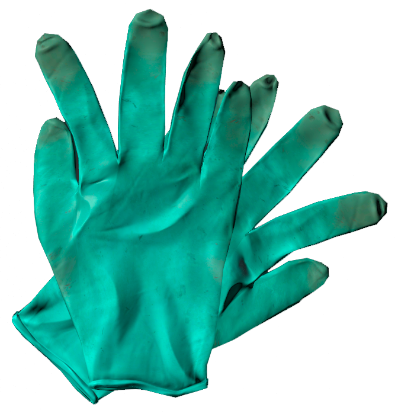
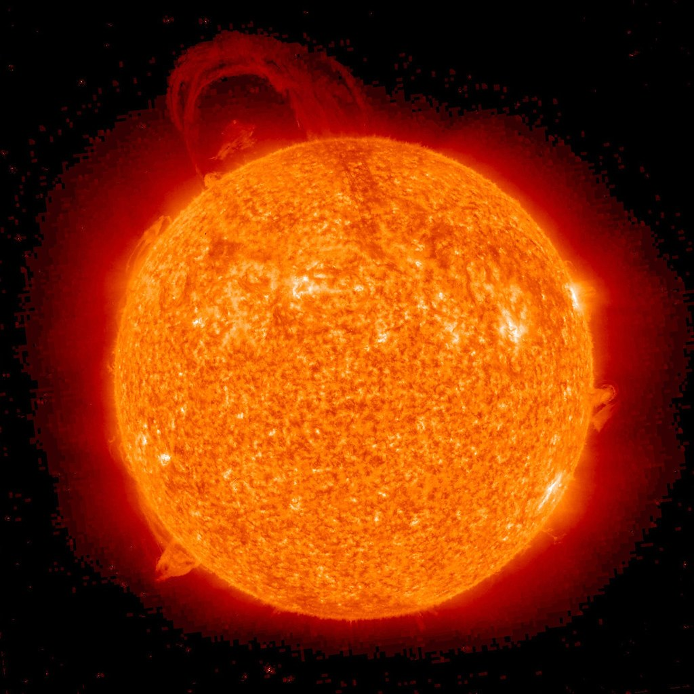

Gerçekten İşe Yarayan Bir Güneş Yanığı Tedavisi
Er ya da geç herkes güneş yanığı olmak gibi acı verici bir hata yapar. Belki de koyu teninizin UV ışınlarına karşı hassas olmadığını düşündünüz ya da güneş kremi sürmeyi tamamen unuttunuz. Sorun değil, böyle şeyler olur.
Sebebi ne olursa olsun, özellikle de dışarıdaysanız güneş yanığını hızlı bir şekilde tedavi etmeniz gerekir; dikkat etmezseniz hafif rahatsız edici bir durumdan acı verici bir duruma geçebilir.
Güneş yanığı nasıl tedavi edilir
Güneş yanığı cilt hücrelerinizi öldürür, bu nedenle teknik olarak hasarı iyileştirmenin bir yolu yoktur. Yapabileceğiniz tek şey, cildiniz yeni, sağlıklı hücreler üretmekle meşgulken daha fazla zararı önleyerek ve semptomları yöneterek tedavi etmektir.
1. Güneşten uzak durun
Hala güneşe maruz kalıyorsanız, daha fazla hasarı azaltmanız gerekir. Bu, gölge aramak, cildinizi sıkı dokunmuş giysilerle örtmek veya daha da iyisi içeri girmek anlamına gelir.
2. Bölgeyi soğuk su ve nemlendirici ile yatıştırın
Tıpkı sıcak bir içecek veya tabaktan kaynaklanan yanık gibi, güneş ışınlarından kaynaklanan yanık da ısıyı ciltte hapseder. Bu da etkili güneş yanığı tedavisinin önemli bir parçasının bu ısıyı serbest bırakmak olduğu anlamına gelir. New York'ta kurul sertifikalı bir dermatolog olan Meghan Feely, o günün geri kalanında 15 dakikalık aralıklarla hafifçe soğuk kompres uygulanmasını veya soğuk bir duş ya da banyo yapılmasını önermektedir. Sizin için neyin serin olduğu yanığa ve ne kadar hassas olduğunuza bağlı olacaktır, bu nedenle yaralı cildin bir kısmının suyla kısa bir süre temas etmesine izin vererek suyu test ettiğinizden emin olun.
(Çevirmenin notu: Aşırı soğuğun da cilt hasarı yapacağını unutmayın. Kontrollü gitmek önemlidir.)
Banyonuzu daha rahatlatıcı hale getirmek için biraz kolloidal (veya çok ince öğütülmüş) yulaf ezmesi ekleyebilirsiniz. New York'ta yönetim kurulu sertifikalı bir dermatolog olan ve UnionDerm'de direktörlük yapan Anne Chapas, yulaf ezmesinin anti-enflamatuar özelliklerinin iyi çalışıldığını söylüyor. Yulaf ezmeniz yoksa, mısır nişastasının da benzer faydaları vardır ve kabartma tozu da yardımcı olabilir.
(Çevirmenin notu: Yulaf ezmesinin işe yarayacağını söyleyen başka kaynaklar da var ancak pratik sonuçların ötesinde ciddi bir bilimsel yayın bulamadım)
Güneş yanıklarında karbonat kullanımıyla ilgili kontrollü bir çalışma olmamasına rağmen, Amerikan Dermatoloji Akademisi (AAD) üyesi ve kurul sertifikalı bir dermatolog olan Dr. Jenni Holman, insanların (dermatologlar da dahil olmak üzere) genellikle iltihabı yatıştırmak ve güneş yanığıyla ilişkili ağrıyı azaltmak için bu mutfak malzemesini önerdiğini söylüyor. Bunun nedeninin tozun antimikrobiyal özelliklere sahip olması ve anti-enflamatuar faydalarının güneş yanığı cildin pH'ını başlangıç seviyesine yaklaştırma yeteneğinden kaynaklanabileceğini açıklıyor.
Eğer denemek isterseniz, soğuk bir banyoya 2 ons (⁓56,7 gr) karbonat eklemenizi öneriyor.
Dr. Feely, duş aldıktan veya banyo yaptıktan sonra cildinizi tamamen kurulamamanızın önemli olduğunu söylüyor. Güneş yanığı dış katmanınızı susuz bırakabilir ve bir miktar su bırakmak epiderminizin yakıcı sıcaklığın bir sonucu olarak kaybettiği H2O'nun bir kısmını yeniden emmesini sağlar.
Cildiniz hala nemliyken, hücrelerinizin yeniden emebilmesi için suyu daha fazla hapsetmek üzere bir nemlendirici uygulayın. Piyasada sayısız ürün bulunmaktadır ve hatta bazıları özellikle yanmış cilde bakım yaptığını iddia etmektedir. Dr. Feely, C ve E vitaminleri içeren herhangi bir nemlendiricinin en iyi sonucu vereceğini söylüyor. Bunlar cildin iyileşmesine yardımcı olan ve oluşacak pullanma miktarını en aza indiren antioksidanlara sahiptir.
Aloe vera içeren nemlendiriciler - hatta sadece bitkinin suyunun jel formu - genellikle güneş yanığı için en iyi şey olarak lanse edilir. Dr. Feely, aloe veranin cildi iyileştirmek, nemlendirmek ve iltihaplanmayı azaltmak için yaygın olarak kullanıldığını ve enfeksiyonu önlemeye yardımcı olabilecek bazı cilt iyileştirici proteinler içerdiğini söylüyor.
Bununla birlikte, aloe veranın diğer nemlendiricilere kıyasla güneş yanıklarını iyileştirmede sağladığı üstün fayda net değildir. Bazı çalışmalar istatistiksel olarak anlamlı bir avantaj sağladığını göstermektedir. Ancak diğer araştırmalar aynı artışı göstermemektedir. Sonuç olarak, güneş yanığı tedavileri üzerine yapılan çok az sayıda büyük ölçekli çalışma, aloe vera ile plasebo arasında bir karşılaştırma içermektedir.
Bazı nemlendiriciler vazelin (petrolatum) veya seramid gibi oklüzifler içerir, ancak bunların kullanımı cilt uzmanları arasında tartışmalı bir konudur. Dr. Chapas, tek amaçları nemi hapsetmek ve cilde yakın tutmak olduğu için bu bileşenleri önermektedir. Öte yandan Dr. Feely, petrol bazlı seçeneklerin nemle birlikte ısıyı da hapsedeceğini ve serbest bırakılmasını çok daha zor hale getireceğini söylüyor. Dr. Holman ise bu ürünleri yalnızca güneş yanığının son aşamalarında, cilt soyulmaya başladığında öneriyor.
Yama testi, oklüzif içeren bir nemlendiriciden fayda görüp göremeyeceğinizi anlamanın muhtemelen en iyi yoludur. Ürünü yanmış cildinizin çeyrek büyüklüğündeki bir bölgesine uygulayın ve 10 ila 20 dakika bekleyin. Eğer o noktada yanma hissi artarsa, ürünü dikkatlice yıkayın ve daha hafif jel veya su bazlı formülasyona sahip bir nemlendirici kullanın.
Son olarak, ekstra yatıştırıcı güç için, nemlendiricinizi kullanım aralarında dondurucuya değil buzdolabına koyun. Sıcaklıktaki aşırı değişiklik daha da fazla ağrıya neden olabileceğinden buz paketlerinden uzak durun.
3. Reçetesiz satılan ilaçlarla ağrıyla savaşın
Hassas bir deri parçasında veya dizlerinizin arkası gibi sürekli gerilen bir bölgede güneş yanığı genellikle çok fazla acıya neden olur. Hem de çok. Soğuk duş ve nemlendirici istediğiniz kadar yardımcı olmuyorsa, takviye almanın zamanı gelmiş demektir.
(Çevirmenin notu: Kullanılabilecek ilaçlar için doktorunuza başvurunuz.)
4. Bol bol su için
AAD, güneş yanığına tepki olarak vücudunuzun sıvıyı cildinizin yüzeyine çekeceğini ve organlarınızın geri kalanından uzaklaştıracağını ve bunun da sonunda dehidrasyona neden olabileceğini söylüyor. Su içmek veya spor içecekleri ile sıvı takviyesi yapmak bunu önlemeye yardımcı olabilir.
(Çevirmenin notu: Su kaybı için en iyi içecek sudur.)
5. Kabarcıklarınızı rahat bırakın
İkinci derece bir güneş yanığınız varsa, kabarcıklar alacaksınız ve bunu, yanlış ayakkabıları giydiğinizde oluşan kabarcıklara benzer bir şekilde tedavi etmelisiniz: onları kendi haline bırakın.
Kısacası, kabarcıklar hasarlı cildi enfeksiyondan korur. Onları patlattığınızda, bakteri ve diğer patojenlerin yaranın üzerine veya içine girme riskini alırsınız. Yapabileceğiniz tek şey, kabarcıklarınızdan birinin patlaması ihtimaline karşı kabarcıklı bölgeyi yumuşak sabun (kokusuz ve ideal olarak nemlendirici özelliklere sahip) ve suyla temiz tutmaktır. Böyle bir durumda bölgeyi sabun ve suyla temizleyebilir, antibiyotik merhem sürebilir ve yarayı yapışkan olmayan bir bandajla kapatabilirsiniz.
Vakaların büyük çoğunluğunda kabarcıklarınızı kendi haline bırakmanız gerekse bile Chapas, özellikle rahatsız edici olanları dikkatlice boşaltabileceğinizi söylüyor:
- Bölgeyi iyice temizleyin ve ellerinizi su ve sabunla yıkayın. Cerrahi eldiven giyebiliyorsanız bunu yapın.
- Sterilize edilmiş bir iğne ile kabarcık kapağını yavaşça delin (alkollü bir ped ile iyice temizleyin). Bunu yavaşça yapın-sıvının dışarı çıkabilmesi için yeterince derine inmek istersiniz, ancak altındaki hassas yeni dokuyu dürtecek kadar derine değil.
- Sıvıyı boşaltmak için kabarcığa hafifçe bastırın. Yaralı bölgeyi enfeksiyondan koruyacağı için kapağı yerinde tutmak çok önemlidir.
- Günde iki kez antibiyotik merhem sürün.
- Bölgeyi bir bandaj ile örtün.
Enfeksiyon riskinizi yükseltmek istemediğiniz için kabarcıkları yalnızca idareli bir şekilde boşaltın. Kabarcıklarınız özellikle büyükse veya yüzünüz gibi hassas bölgelerdeyse, bir doktora gidin.
(Çevirmenin notu: Siz en iyisi sağlık servisine bir uğrayın)
6. Bırakın soyulma doğal olarak gerçekleşsin
Güneş yanığınızdan bir hafta kadar sonra cildiniz soyulmaya başlayacaktır. Bu, vücudunuzun yeni doku oluşturduğu ve ölü hücrelerden kurtulduğu anlamına gelir. Bu süreç gözler için biraz ürkütücü olabilir ve biraz kaşıntı ve rahatsızlıkla birlikte gelebilir.
Ve (en azından bazıları için) hiçbir şey devasa bir deri tabakasını kırmadan nazikçe kaldırmaktan daha tatmin edici olmasa da, bu memnuniyet iyileşme sürecine verilen zarardan daha ağır basmaz. Sağlıklı dokuya zarar verebileceğiniz için soyulan cildinizi çekmeyin.
Güneş yanığını takip eden günlerde bol giysiler giyerek rahatsızlıkla mücadele edebilirsiniz. Bu, kumaşın zaten hassas olan bölgeye sürtünmesini ve tahriş etmesini önleyecektir. Dr. Holman, bu aşamada kabartma tozu ve su kullanarak bir macun hazırlayabileceğinizi ve bunu yanığa uygulayabileceğinizi söylüyor. Bu tekniğin semptomları hafifletmeye yardımcı olacağını ve hafif bir eksfoliyan görevi göreceğini açıklıyor.
(Çevirmenin notu: Kaşıntıyı azaltmak için kullanılabilecek ilaçlar mevcut. Bu konuyu doktorunuz ile görüşebilirsiniz.)
Gelecekteki güneş yanıklarını önlemek için kendinizi koruyun
Güneş hasarı kümülatiftir, yani her güneş yanığı geçirdiğinizde melanom gibi cilt kanserlerine yakalanma riskiniz artar. Bu nedenle cildinizi mümkün olduğunca UV radyasyonundan korumak son derece önemlidir. Güneş yanığını önlemek, cildinizi sağlığına kavuşturmaktan her zaman daha iyidir.
Günlük yaşamınızda genel güneş güvenliği uygulamak çok yardımcı olabilir. Kapalı alanlarda kalsanız bile, açıkta kalan bölgelerinize her gün en az 30 SPF korumalı güneş kremi sürün. Doğru miktarda kullandığınızdan ve paket üzerinde belirtildiği şekilde tekrar uyguladığınızdan emin olun. Yeniden uygulama özellikle suya giriyorsanız önemlidir, bu durumda koruyucunuz akıp gidebilir.
Uzun süre güneşte kalmayı planlıyorsanız, Dr. Feely güneş kreminizi iyi kıyafet seçimleriyle desteklemenizi önerir. Örneğin, polyester ve naylon gibi sentetik kumaşlar pamuğa göre çok daha fazla UV koruması sağlar.
UPF giysiler, şapka ve yüksek UV dereceli güneş gözlükleriyle kendinizi örtmek de vücudunuzun en dış katmanını korumaya yardımcı olacaktır. Arada bir cildinizde güneş yanığı belirtileri olup olmadığını kontrol etmeyi de unutmayın.
Güneş yanığı nedir?
Tüm bu koruma önemlidir çünkü güneş yanığı, güneşin ultraviyole radyasyonu cilt hücrelerinin içindeki DNA'ya zarar verdiğinde meydana gelir. Sonuç olarak, bu hücreler apoptoz olarak bilinen bir süreçte ölürler. Bu aşırı hasar ve ölüm, bağışıklık sisteminin bölgeye bir inflamatuar protein ve kan seli salgılamasına neden olur. Bu kan akışı dış derinin ısınmasına, tahriş olmasına ve kızarmasına neden olur.
Birinci derece güneş yanıklarında cildin en dış tabakası olan epidermis hasar görür. Bunlar, kızarıklık, iltihaplanma ve ağrı yaşayacağınız sıradan güneş yanıklarıdır. Eğer kabarcıklar görürseniz, ikinci derece güneş yanığı ile karşı karşıyasınız demektir. Bu, UV radyasyonunun epidermise nüfuz ettiği ve cildin ikinci tabakası olan dermise kadar hücreleri öldürdüğü yerdir. Bu iki doku katmanı birbirinden ayrıldığında kabarcıklar oluşur ve daha fazla hasarı önlemek için bölgeye iltihaplı sıvı hücum eder.
Cildinizin güneş yanığından sonra toparlanması için geçen süre değişir. Dr. Feely, "Şiddetine bağlı olarak kızarıklık birkaç günden haftalara kadar devam edebilir" diyor.
Güneş yanığı geçtikten sonra bile cildinizde ince çizgiler, kırışıklıklar veya halk arasında güneş lekeleri olarak bilinen solar lentijinler gibi kalıcı etkiler görebilirsiniz. Tüm bu işaretler daha çok güneşe tekrar tekrar maruz kaldıktan sonra gelişir. Feely, bu değişiklikleri fark ederseniz, Retin-A gibi topikal bir retinoid (A vitamininden türetilen bir kimyasal bileşik sınıfı) uygulamanın yardımcı olabileceğini söylüyor. Bu tür bir merhem cildin kolajenini yeniden şekillendirir ve güneş lekelerinin solmasına yardımcı olan cilt pigmenti melanin üretimini engeller.
Artık ne yapmanız gerektiğini bildiğinize göre, dışarıdaki güzel havanın tadını daha güvenli bir şekilde çıkarabilirsiniz. Gitmeden önce bu rehberi yer imlerine ekleyin, böylece bir noktayı kaçırırsanız cildinizi hızla yatıştırabilir ve güneş yanığından mümkün olan en kısa sürede kurtulabilirsiniz.
Çevirmenin notu: Amerikada sağlık sistemi bizdeki kadar hızlı bir şekilde doktora ulaşım sunmadığından makalenin orijinalinde Amerikada reçetesiz satılan bazı ilaçlar tavsiye edilmektedir. Bu kısımları yazıdan çıkarttım. Doktorunuz sizi daha doğru yönlendirecektir.
